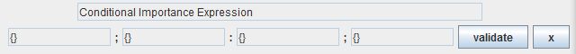
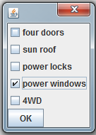
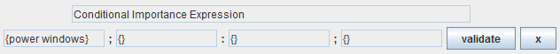
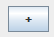
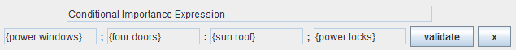

Setup Preferences (CI-NET)

Select one of the four expression fields. A dialog will appear. Select the attributes you would like to add to the field and press OK.


Fill fields until you have the desired expression. See Reading CI-Net Statements for instruction reading Conditional Importance Expressions.
Add additional member fields by selecting the plus button in the appropriate section

CI-net Statements in the form {A};{B}:{C};{D} can be read as:
If I have attributes A, and I do not have attributes B, then I prefer the attributes C over the attributes D.
Example:

If the car has power windows, and does not have four doors, then I prefer that it have a sun roof over power locks.
To form a complete Conditional Importance Expression (preference), the final two fields must be filled AND each attribute may only appear once in the expression.
Example statements:
- Using only the final two fields forms a preference:
- "I prefer that the car have a sun roof over power locks."
- Using the final two fields with either the first or second field forms a conditional preference:
- first: "If the car has power windows, then I prefer that it have a sun roof over power locks."
- second: "If the car does not have four doors, then I prefer that it have a sun roof over power locks."
- All four fields can also be used at the same time:
- "If the car has power windows, and does not have four doors, then I prefer that it have a sun roof over power locks."
Controls
See Controls for preference file information including saving and loading